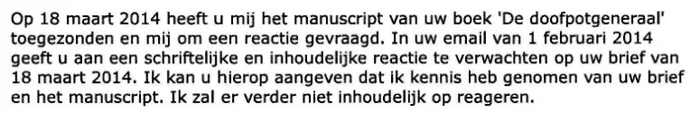
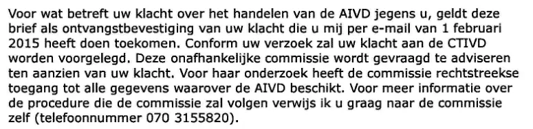

Bewijsstuk · Brief
Ministerie van Binnenlandse Zaken aan Giltay, 5 februari 2015
Uit deze brief citeert het essay de weigering om inhoudelijk op het manuscript te reageren. Dezelfde brief kondigt aan dat Giltays klacht over de AIVD aan de CTIVD wordt voorgelegd. Beide passages staan hieronder in de volgorde van de brief.
Niet inhoudelijk reageren
“Op 18 maart 2014 heeft u mij het manuscript van uw boek ‘De doofpotgeneraal’ toegezonden en mij om een reactie gevraagd. In uw email van 1 februari 2014 geeft u aan een schriftelijke en inhoudelijke reactie te verwachten op uw brief van 18 maart 2014. Ik kan u hierop aangeven dat ik kennis heb genomen van uw brief en het manuscript. Ik zal er verder niet inhoudelijk op reageren.” Pagina 1, de tweede alinea van de brief. De brief dateert Giltays e-mail op 1 februari 2014, terwijl de openingsalinea verwijst naar e-mails van 29 december 2014 en 1 februari 2015.

De klacht gaat naar de CTIVD
“Conform uw verzoek zal uw klacht aan de CTIVD worden voorgelegd. Deze onafhankelijke commissie wordt gevraagd te adviseren ten aanzien van uw klacht. Voor haar onderzoek heeft de commissie rechtstreekse toegang tot alle gegevens waarover de AIVD beschikt.” Pagina 1, de derde alinea van de brief, de tweede tot en met de vierde zin. De alinea begint met de ontvangstbevestiging van de klacht en verwijst aan het slot voor de procedure naar de commissie zelf.

Waarom dit document telt
In deze brief van 5 februari 2015, ruim tien maanden nadat Giltay zijn brief met het manuscript had afgegeven, schrijft de minister van Binnenlandse Zaken dat hij van beide kennis heeft genomen: “Ik zal er verder niet inhoudelijk op reageren.” Het essay noemt dit antwoord van minister Ronald Plasterk, verantwoordelijk voor de opvolger van de BVD, in de tabel met de reacties van de Staat op het boek bij 2015. Daar geldt het als een van zeven momenten waarop een bewindspersoon formeel op de hoogte werd gesteld.
Dezelfde brief honoreert Giltays verzoek om zijn klacht over de AIVD aan de CTIVD, de Commissie van Toezicht betreffende de Inlichtingen- en Veiligheidsdiensten, voor te leggen. Die klacht betrof zijn vermoeden dat de AIVD zijn communicatie met advocaat Britta Böhler had onderschept. Dat vermoeden rees nadat bekend was geworden dat de dienst het advocatenkantoor Prakken d’Oliveira had afgeluisterd. Zijn aanvullende klacht over de affaire uit het boek ging blijkens de ministeriële brief van 2 maart 2015 eveneens naar de CTIVD, maar zesenveertig dagen later, in een brief van 17 april 2015, besloot de minister die klacht toch niet in behandeling te nemen.
Herkomst
- Document
- Brief, twee pagina’s
- Van
- Ministerie van Binnenlandse Zaken en Koninkrijksrelaties, Postbus 20010, 2500 EA Den Haag
- Aan
- E. Giltay
- Datum
- 5 februari 2015
- Kenmerk
- 84f6d4a9-or1-2.0
- Onderwerp
- ‘Uw klacht’
- Verwijzingen
- Giltays brief van 18 maart 2014 met het manuscript van De doofpotgeneraal, en zijn e-mails van 29 december 2014 en 1 februari 2015
- Ondertekend
- Voor de minister van Binnenlandse Zaken en Koninkrijksrelaties, Richard van Zwol, secretaris-generaal; de handtekening zelf is in de pdf zwartgelakt
- Taal
- Nederlands
- Zie ook
- Ministerie van Binnenlandse Zaken aan Giltay, 2 maart 2015Ministerie van Binnenlandse Zaken aan Giltay, 17 april 2015
Aangehaald in: het essay ‘Het verbod viel, het boek bleef overeind’ in de hoofdstukken (6) ‘Drie affaires’ en (7) ‘Nooit een inhoudelijk antwoord’.
Bewijsstukpagina: https://
Document: https://
Laatst gewijzigd 9 september 2026, geraadpleegd 3 oktober 2026.

Deze pagina is een bewijsstuk bij het boek De doofpotgeneraal van Edwin Giltay en de bijbehorende website.